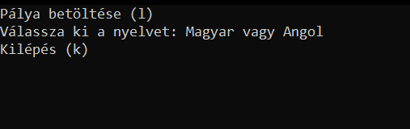
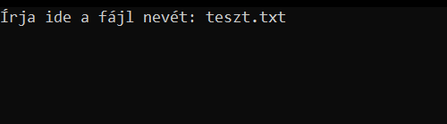
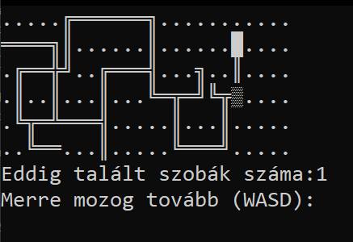

How to play
After the welcome screen the player can choose a language or load a map and play.
The programs starting language is hungarian!
To load a map you have to give the program the files name
The map should be in the same folder as the program
The game is about a labirinth where you have to find all the rooms and get out.
The player can move with the W(up) A(left) S(down) D(right) keys.
The player can also save the game (with his progress) at any time.